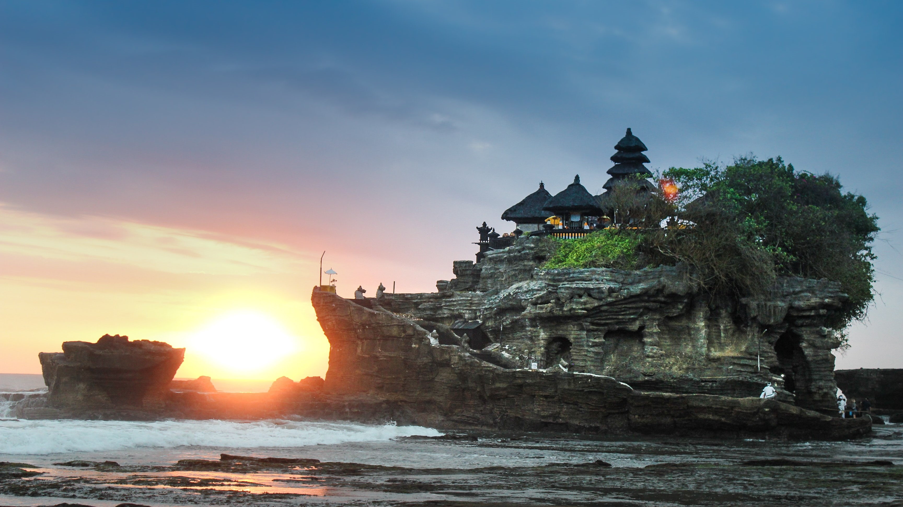
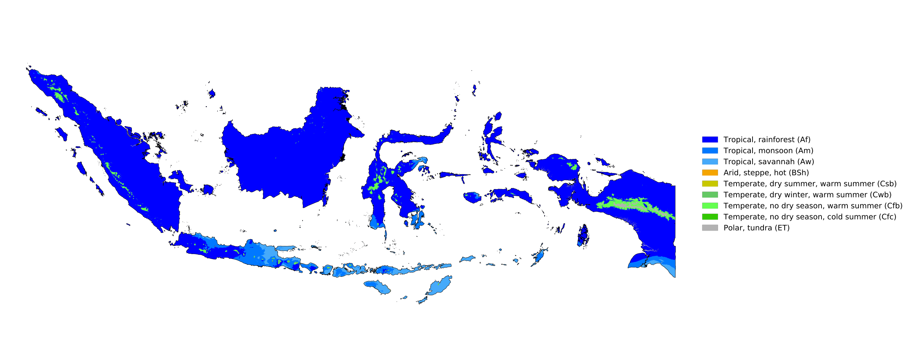
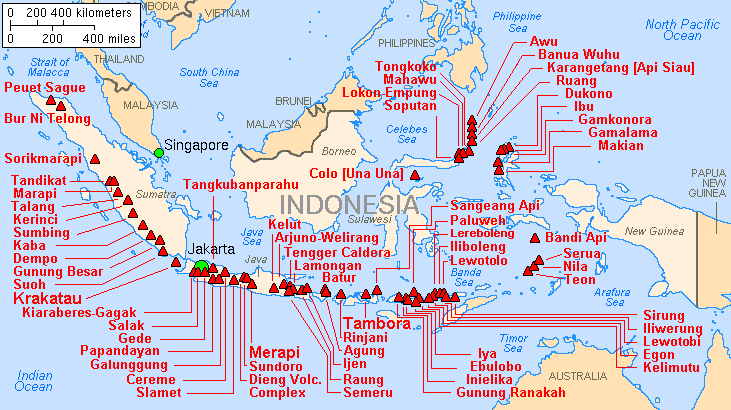

Geografi
Indonesia memiliki sekitar 17.504 pulau (menurut data tahun 2004; lihat pula: jumlah pulau di Indonesia), sekitar 6.000 di antaranya tidak berpenghuni tetap, menyebar sekitar katulistiwa, memberikan cuaca tropis. Pulau terpadat penduduknya adalah pulau Jawa, di mana lebih dari setengah (65%) populasi Indonesia. Indonesia terdiri dari 5 pulau besar, yaitu: Jawa, Sumatra, Kalimantan, Sulawesi, dan Irian Jaya dan rangkaian pulau-pulau ini disebut pula sebagai kepulauan Nusantara atau kepulauan Indonesia.
Indonesia memiliki lebih dari 400 gunung berapi dan 130 di antaranya termasuk gunung berapi aktif. Sebagian dari gunung berapi terletak di dasar laut dan tidak terlihat dari permukaan laut. Indonesia merupakan tempat pertemuan 2 rangkaian gunung berapi aktif (Cincin Api). Terdapat puluhan patahan aktif di wilayah Indonesia.
Iklim
Secara umum, Indonesia beriklim tropis (kelompok A dalam klasifikasi iklim Köppen; meskipun ada wilayah dengan tipe iklim yang berbeda). Perairan yang hangat di wilayah Indonesia sangat berperan dalam menjaga suhu di darat tetap konstan, dengan rerata suhu di wilayah pesisir sebesar 28 °C, di wilayah pedalaman dan dataran tinggi sebesar 26 °C , serta di wilayah pegunungan sebesar 23 °C. Kelembapan berkisar antara 70 hingga 90%.
Faktor utama yang memengaruhi iklim Indonesia bukanlah suhu udara ataupun tekanan udara, melainkan curah hujan. Variasi musim di Indonesia, yaitu musim hujan dan musim kemarau, berkaitan dengan pergerakan angin muson. Angin muson barat yang bertiup dari Asia ke Australia melalui Indonesia pada bulan Oktober hingga Februari mengakibatkan curah hujan yang tinggi, terutama di Indonesia bagian barat. Sementara itu, angin muson timur yang bergerak ke arah sebaliknya pada bulan April hingga Agustus tidak banyak membawa uap air dan menurunkan hujan. Selain itu, ada pula musim peralihan ketika matahari melintasi khatulistiwa yang mengakibatkan angin bertiup lemah dan bergerak tak menentu. Meskipun demikian, tidak semua wilayah Indonesia memiliki pola curah hujan yang sama. Selain daerah musonal, ada pula daerah ekuatorial yang dipengaruhi daerah pertemuan angin antartropis, serta daerah lokal yang polanya berkebalikan dengan pola musonal.
Geologi
Secara tektonik, sebagian besar wilayah Indonesia sangat tidak stabil karena lokasinya menjadi pertemuan dari beberapa lempeng tektonik, seperti lempeng Indo-Australia, Lempeng Pasifik, dan Lempeng Eurasia. Negara ini terletak di Cincin Api Pasifik sehingga memiliki banyak gunung berapi dan sering mengalami gempa bumi. Busur vulkanik berjajar mulai dari Sumatra, Jawa, Bali dan Nusa Tenggara, dan kemudian ke Kepulauan Banda di Maluku hingga ke timur laut Sulawesi. Dari sekitar 400 gunung berapi, kurang lebih 130 di antaranya masih aktif.
Sebuah letusan supervulkan pada sekitar 77.000 SM yang membentuk Danau Toba dipercaya mengakibatkan musim dingin vulkanik dan penurunan suhu dunia selama bertahun-tahun. Letusan Tambora pada tahun 1815 dan letusan Krakatau pada 1883 juga termasuk letusan gunung terbesar yang tercatat sepanjang sejarah. Gempa bumi berdorongan besar yang berdampak ke Indonesia dan terjadi belum lama ini adalah gempa bumi dan tsunami Samudra Hindia 2004.
Lingkungan Hidup

Wilayah Indonesia memiliki keanekaragaman makhluk hidup yang tinggi sehingga dikelompokkan sebagai salah satu dari 17 negara megadiversitas oleh Conservation International.[88][89] Dari sudut pandang wilayah biogeografi, Indonesia termasuk dalam wilayah Malesia. Flora dan faunanya merupakan campuran dari spesies khas Asia dan Australasia. Alfred Russel Wallace, seorang ahli sejarah alam, menghipotesiskan sebuah garis pemisah (yang kemudian disebut garis Wallace) untuk membedakan organisme yang berasal dari Asia (Paparan Sunda) dan Australia (Paparan Sahul). Kawasan biogeografi yang menjadi zona transisi di antara kedua paparan ini disebut Wallacea. Selain itu, garis Weber dan garis Lydekker juga digunakan untuk menetapkan batas biogeografi Indonesia.
Indonesia memiliki sekitar 10% dari seluruh spesies tumbuhan berbunga di Bumi (sebanyak 25.000 spesies, 55% di antaranya endemik di Indonesia). Negara ini juga memiliki sekitar 12% spesies mamalia di Bumi (515 spesies) sehingga menempati peringkat kedua pada keanekaragaman mamalia setelah Brasil. Indonesia menempati peringkat keempat pada keanekaragaman spesies reptil (781 spesies) dan primata (35 spesies), peringkat kelima pada keanekaragaman spesies burung (1.592 spesies), serta peringkat keenam pada keanekaragaman spesies amfibi (270 spesies).
Komentar